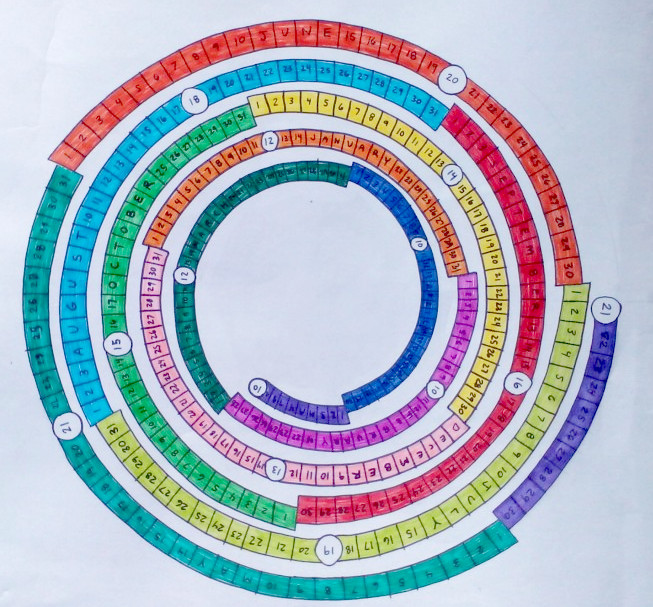

The Future of Calendaring: The Interactive Digital Spiral Calendar
Unveiling a groundbreaking blueprint for the next generation of calendaring: our Interactive Digital Spiral Calendar is not just a visual treat but a paradigm shift in how we perceive and interact with time.
- Dimensional Exploration & Intuitive Time Progression: This design introduces a novel 3-dimensional scrolling experience that moves beyond traditional up-and-down scrolling. It mirrors the cyclical, interconnected nature of time, inviting users to zoom in and out seamlessly. The spiral format offers a more intuitive exploration of days, months, and years, emphasizing the continuous flow of time.
- Digital Integration & Interactivity: In its digital format, the spiral calendar becomes an interactive tool. Users can zoom, click on dates for more information, and integrate with other apps or features, making planning and reflection immersive.
- Diverse Calendar Integration: While the default setting showcases the Gregorian calendar, this platform is versatile. Users can effortlessly switch between various calendar systems like Lunar, Hijri, Hebrew, Hindu, and more, ensuring that cultural and religious observances find a place in your planning.
- Personalized Viewing & Customization: Tailor your calendar view to your preferences. From focusing on a single lunar cycle to viewing an entire year, the power of customization is at your fingertips. Additionally, users have room to annotate or mark specific dates of importance.
- Detailed Day Entries: Each day isn't just a number on this calendar. Users can delve deeper, adding notes, reminders, or reflections, making the most of each date.
- Adaptive Design & Thematic Extensions: The calendar's design is adaptable, catering to both macro-planners and micro-managers. It can also include events like meteor showers and solstices and can be themed around different cultural, historical, or astronomical events.
- Fluid Experience & Visual Continuity: Say goodbye to the abruptness of flipping pages or switching tabs. The spiral design ensures a smooth, continuous calendaring experience, creating an engaging journey through time.
- Aesthetic Appeal: The unique and colorful design is not only more engaging than traditional calendars but also serves as a conversation starter or beautiful wall display.
- Educational Tool: Especially for children, this visual tool aids in understanding time, months, and lunar cycles.
- Holistic View: The spiral provides a comprehensive view of the year, promoting planning or reflection in relation to the entire year.
- Highlighting Lunar Cycles: By using circles to represent full moons, the calendar emphasizes lunar cycles, catering to those who track moon phases for various reasons.
- Compact Representation: The design efficiently represents a year (or more) in a single view, allowing users to easily grasp the progression of time and lunar events.
- Promotion of Astronomical Awareness: The calendar promotes awareness and curiosity about astronomy, especially for those unfamiliar with lunar cycles.
- Unique Gift Option: Its novelty makes it a perfect gift for those interested in astronomy or looking for a fresh perspective on calendaring.
- Tactile Learning: In a tactile format, it can be a valuable learning tool for visually impaired individuals.